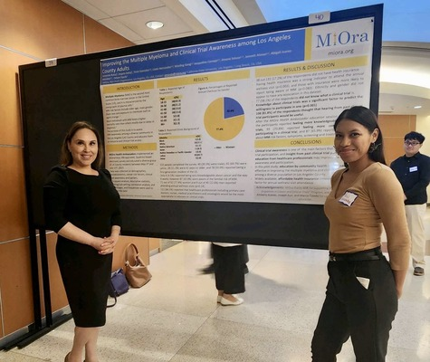
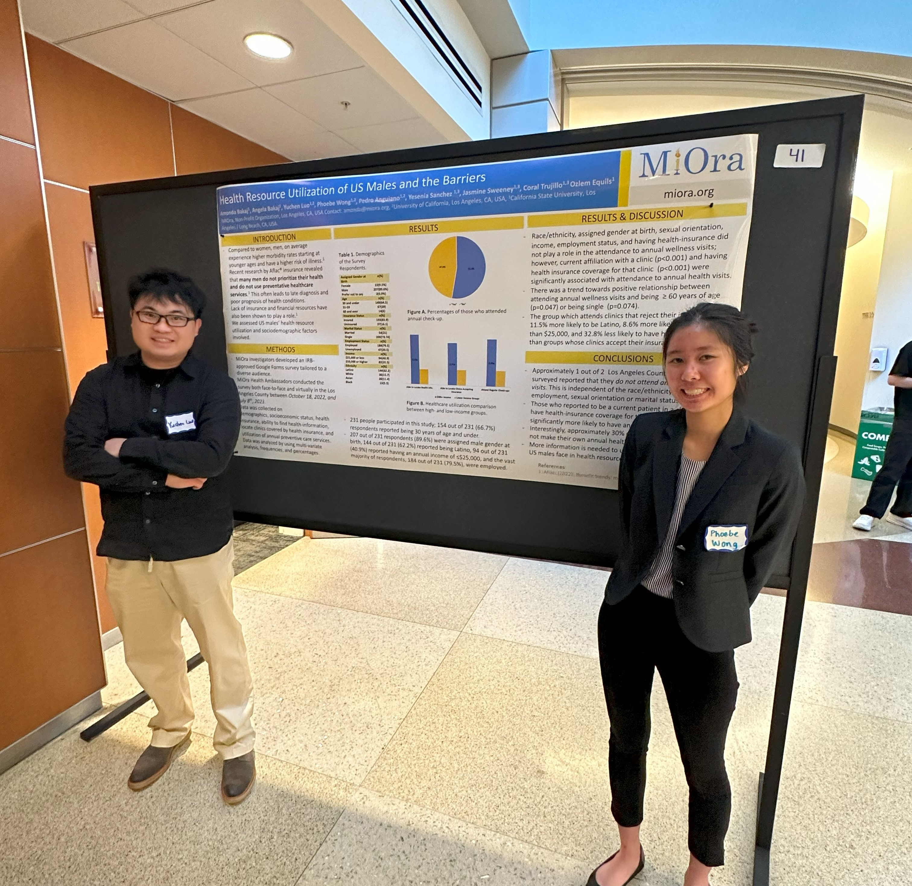
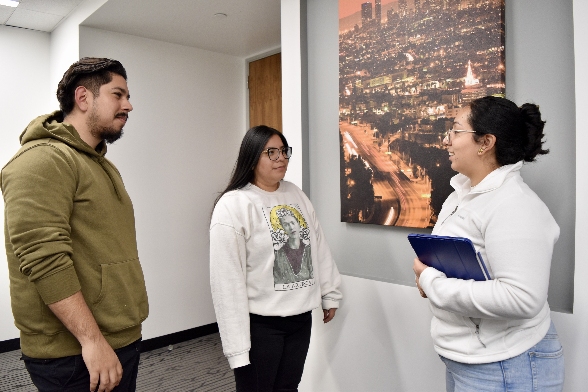
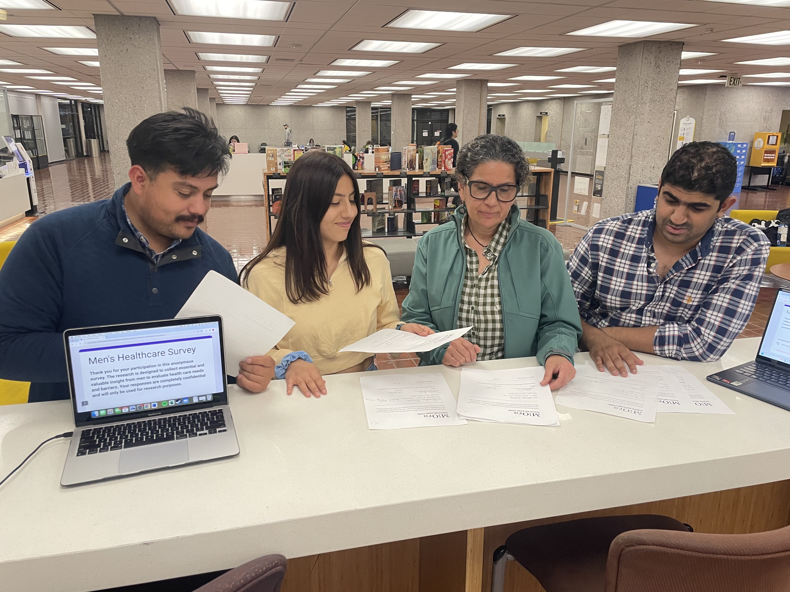
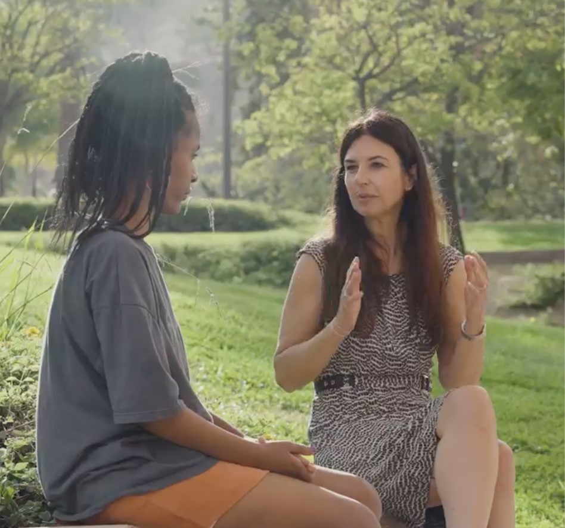
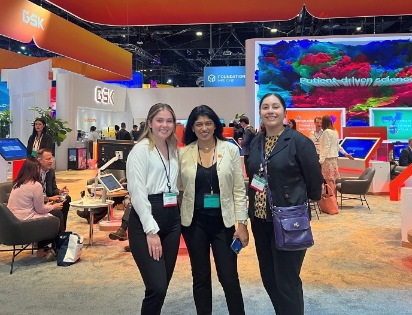

Why Should students join MiOra and participate in its
health projects?
Interns can develop real life experiences, improve public health, and
build up academic confidence by the educational resources provided through their internship at MiOra, which
can lead to opportunities to network and connect with professionals and open doors to provide possible job
offers making it an important stepping stone in future career success.
What are the health projects managed by MiOra?

Closing the disparities in Cancer Program
Public Health students were trained as MiOra Ambassadors in ovarian,
endometrial cancer, multiple myeloma, and clinical Trials. With this program, MiOra Ambassadors
were able to survey and educate over 300 diverse community members in Los Angeles County.
Assessing US Men's Health Resoruce Utilization & the Associated Barriers Project
MiOra investigators developed a survey which was tailored to a diverse
audience to find out why many men do not prioritize their heath and do not use preventative
healthcare services. The survey was conducted face to face and virtually in Los Angeles County
between October 18, 2022 and July 8th 2023. The data was collected on demographics,
socioeconomics status, health insurance, ability to find health-information, locate clinics
covered by health insurance and utilization of annual preventive care services.


MiOra's Immigrant Health Literacy & Access Project
Oakland University Master of Public Health students are working together to
better understand the attitudes, awareness, and behavior of immigrants with healthcare and
healthcare utilization.
Healthy Long-Life Project-Preventative Care
In the Preventive Care project, MiOra health Ambassadors
work with community members to teach them about vaccines, screening tests, health lifestyles and
nutrition.


Mental Health Project
MiOra’s mental health project is to assess new graduates starting university
or college about the effectiveness and willingness to implement peer-to-peer programs.
AI Project
Due to the rise of Aritificial Intelligence (AI) is crucial
to understanding how AI can change the dynamics between the patient and physician.

Policy Project
MiOra partners with experts in the field to teach their health Ambassadors
about policy and advocacy work. Norchelle M. Brown from Pfizers will be speaking to MiOra Health
Ambassadors about her career pathway in policy and advocacy work on March 18th 2024.